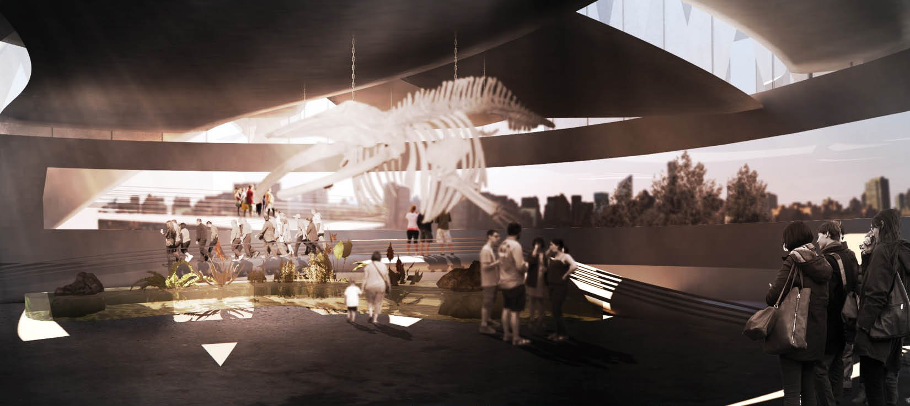
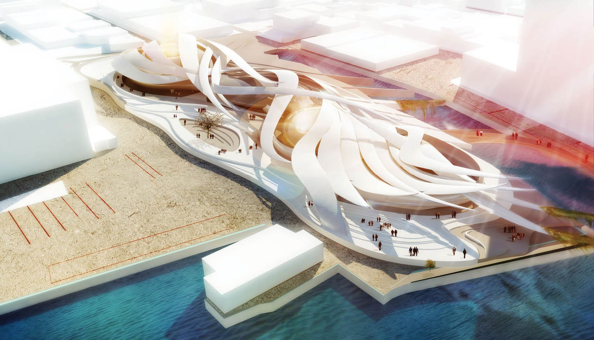
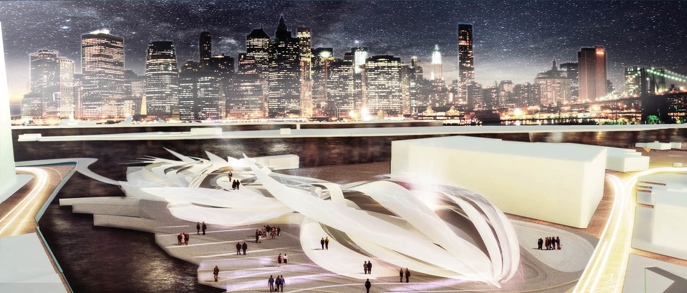
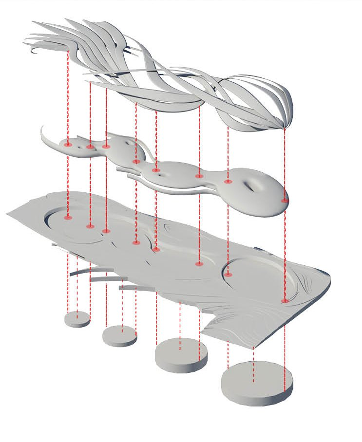
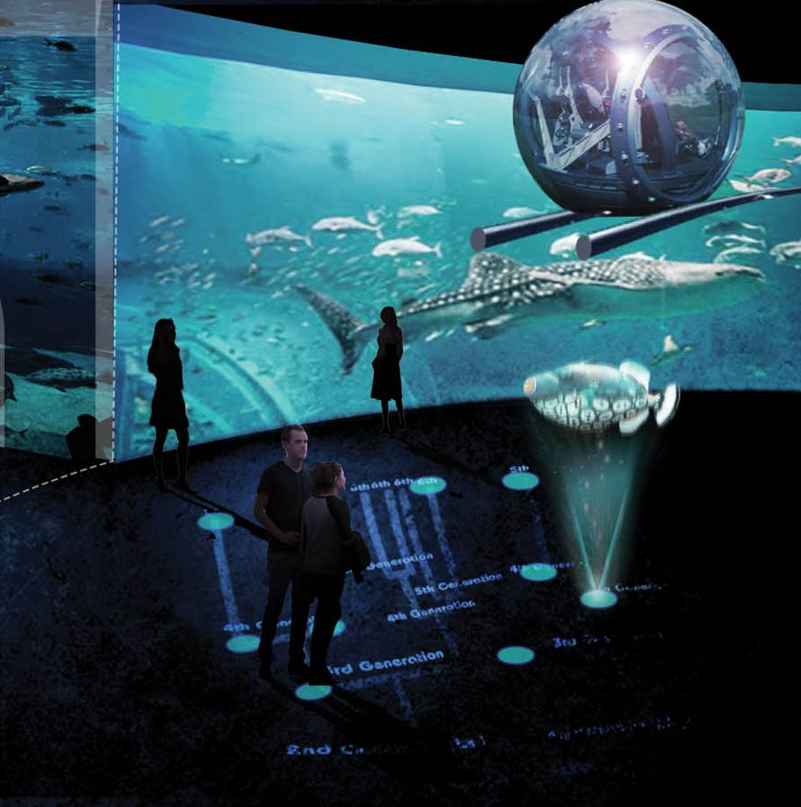

/ COMPETITION
NYC Aquarium
A competition entry for a marine-education building and waterfront public space overlooking the Manhattan skyline — its form drawn from the “immortal” Turritopsis jellyfish and the endless branching of the tree of life.

/ CONCEPT
An organism that never stops beginning again.
Turritopsis nutricula — the “immortal” jellyfish — can revert from its mature form back to its earliest cellular stage and begin its life over, a loop it can repeat indefinitely. That never-ending process of renewal, itself a product of evolution, became the building’s guiding idea.
The aquarium is conceived as an educational facility and public space on an abandoned Manhattan waterfront site, overlooking the skyline — a place to close the gaps in what we know about marine life through everyday exploration and research, and to raise awareness of its fragile state.
Just as the jellyfish’s uniform outer bell encloses the organs that keep it alive, a single continuous exoskeleton wraps the aquarium’s zones and specimens. Exhibits are ordered by their place in the tree of life, so that moving through the building traces the evolutionary stages that produced today’s underwater diversity.
The organism’s tentacles become the building’s connective tissue: they reach out to stitch the severed waterfront back into a continuous coastline, while carving out a private shipyard to service the aquarium and opening new access from the water.



/ STRUCTURE
Layered like the record it tells.
The exhibition is built up in strata, each one a stage in the tree of life — stacked and suspended so visitors read the story from its origins upward. The homogeneous outer shell holds these layers together the way the jellyfish’s bell encloses its organs, giving a single continuous surface to the many zones within.
